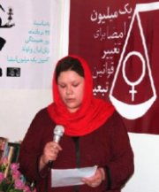

حکم تجدید نظر دادگاه دلارام علی که در تاریخ 8 خرداد سال 86 برگزار شد امروز صبح اعلام شد.دلارام علی در تاریخ 22 خرداد سال 85 در تجمع اعتراضی زنان نسبت به قوانین در میدان هفت تیر همراه با ضرب و شتم زیاد دستگیر شد.دست وی در اثر ضرب و شتم شکست.
حکم اولیه این فعال جنبش زنان، دو سال و ده ماه حبس و ۲۰ ضربه شلاق بود که دادگاه تجدیدنظردو سال و شش ماه زندان را برای وی تایید کرد و از حکم شلاق تبرئه کرد.
این حکم به دایره اجرای احکام ارسال شده و ماموران این دایره به وکیل دلارام علی اخطار داده اند که موکلش بایستی هرچه سریع تر خودش را برای اجرای حکم معرفی کند.
تایید حکم حبس برای دلارام علی و فراخوانی او از سوی دایره اجرای احکام جهت اجرای این حکم سنگین نشان از دور جدید برخورد حاکمیت با فعالین مدنی ایران دارد.
لینک های مربوط:
در نشست کانون مدافعان مطرح شد،درخواست اصلاح قوانين در مورد زنان
روزنا :در هم اندیشی زنان در کانون مدافعان حقوق بشر
اصلاحیه:دادگاه تجدید نظرتنها حکم حبس دلارام علی را تائید کرد
دویچه وله:سایه زندان بر سر فعالان جنبش زنان
رادیو زمانه:دادگاه دارد علیه نظام تبلیغ می کند
مسعود بهنود:هی بزنیدش، دلارام را
حکمی به معنای مخالفت با حقوق زنان، کاوه مظفری
جلوه جواهری:این بار به خیابان شما خواهیم آمد
سامان رسول پور در روزآنلاین:جرم زن بودن
انجمن بدون مرز: در یک حکم غیر منتظره، دلارام علي به 2 سال و 10 ماه حبس و 10 ضربه شلاق محکوم شد
برای آزادی دلارام علی، نامه اتحاد جمهوريخواهان ايران به مقامات اتحاديه اروپا
دویچه وله:تأیید حکم دوسال و نیم حبس برای دلارام علی، فعال حقوق زنان
http://www.akhbar-rooz.com/news.jsp?essayId=12083حکم دو سال و دو ماه حبس و بیست ضربه شلاق دلارام علی تایید شد
شیرین عبادی:حقوق زن و دموکراسی دو کفه یک ترازو هستند
ایران امروز:حکم دلارام علی تائید شد
گویا نیوز:حکم حبس و شلاق دلارام علی تایید شد، دایره اجرای احکام وی را برای اجرای حکم فراخواند،
بالاترین:احتمال اجرای حکم زندان دلارام علی فعال زنان
نواندیش:تاييد محكوميت ٥/٢سال حبس تعزيري يك متهم پرونده تجمع٢٢خرداد ٨٥
پیک ایران:حکم دلارام علی تائید شد
BBC Newsnight report on Women's Day in Iran
Peyvand's Iran news: Unexpected Sentence for Delaram Ali, Women's Rights Defender
Oskowi on Iran:Delaram Ali is sentenced to 2.5 years
Front line:Sentencing of women's rights defender
Vancouveriam:Jail Time And The Lash For Delaram Ali
Mideast Youth:Urgent call for action:Iranian Activist Woman in Imminent Danger
Feminist Peace Network:Iranian Woman sentenced for attending rally for women's right
Frontline : Iran,Sentencing of women’s rights defender
Feministing:Going to prison is always fun
global sisterhod network:Delaram Ali to Receive Lashings and Serve Prison Term of 2 Years 6 Months
Resisting Women:Delaram Ali to receive lashing and serve prison term of 2 years and 6 months
fidh: Confirmation of the sentence against Ms. Delaram Ali, women human rights defender
Iran Watch Canada: Shahrudi Can Stop Delaram Ali’s Prison Sentence
Shir o khorshid forever: Delaram Ali-Prisoner of conscience
Women’s Space:Open letter from Delaram Ali
The contentious Centrist: It is dangerous to be a woman and an activist in Iran
L'IRAN : UN PAYS OU IL FAIT BON ETRE UNE FEMME !!!!
وبلاگها:
ده ضربه شلاق بر پیکر ایرانی بودن ما
شما نهایت سیاهی ها نهایت پلیدی هایید
حکم دلارام علی به دایره اجرای احکام فرستاده شد
ای آقایان! دوستانمان را آزاد کنید
مسیح علی نژاد:دل آرام ! به زناني كه شلاق مي زنند تبريك بگو
نامه ی دادخواهی دلارام علی از رئیس قوه قضائیه
وبلاگ پویا:دلارام علی و امنیت ملی
وبلاگ توجه:خدایا گناهم چه بود؟
بهزاد مهرانی:دلارام علی در آستانه زندان
وبلاگ در دیجیتالی:فقط قوانین نا برابر نیستند،آدم ها هم نا برابرند
زندگی در آکواریوم:آزمون ايجاد امنيت حكومت با حكم دلآرام، نمره= ؟؟؟
نگاه بی حجاب:باز هم خبر از به بند کشیدن خواهر دیگرم
پرنده خارزار:برای دلارام که به دو سال و شش ماه زندان محکوم شد
وبلاگ اشکها و ترسها:برای آرام دل و آنان که حق خواهی را با همه وجود فریاد می زنند!
ناعادلانه
حكم نا عادلانه
در وبلاگ ديگر درج شد
بايد کاری کرد...
خنده داره
امکان نداره!يعنی اينقدر عدالت مورد ادعای آقايون آبکی شده!دنيا بهشون می خنده!!!!
حيف اسم انسان که روی اين ادمها ميگذارند باور کنم اينها اشرف مخلوقات اند شرمتان باد
ای بابا
يه کاری کنيد
نامه يی چيزي
MESSAGEبالاخره که چی؟مگه فقط دلارام است این ها می خواهند چی کار کنند؟ به غیر از حکم های سنگین سندیکایی ها و دانشجوها معلم ها و...توی جنبش زنان نیز این همه حکم های ریز و درشت دادند یعنی همه را می خواهند بندازند زندان؟
به اندیشیدن خطر مکن روزگار غریبی است نازنین
MESSAGEبرای مقابله و جلوگيری از سرکوب مي بايد اثحاد فراگيری را در بين نيروهای فعال اجتماعی بوجود آوريم.تنها در آن هنگاممی توانیم مقاومت موثرتری کنیم. در غیر این صورت ضربه پذیری نیروها افزایش یافته و افراد و گروه ها هر یک نوبت خود را به انتظار می نشینند. با آرزوی رهایی دلارم و دلارام ها.
MESSAGE
هر چند دلارام سالهای خوب عمرش را در زندان می گذراند اما اين رای های ناعادلانه خود نشان گر احساس ترس و وحشتی است که از اين جنبش آرام و بی خطر می کنند.مخالفين برابری زن و مرد بسيار آشفته اند و به همين خاطر از هر نجوايی می هراسند و دست به چنين اقداماتی می زنند....راه کوتاه تر شده و مقصد نزديک چون در ما کسانی مثل دلارام را در کنارمان داريم.....
MESSAGE
MESSAGE
MESSAGE
نه!